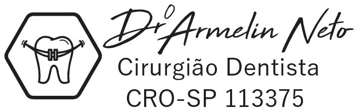

Limpeza
Prevenção, saúde da gengiva e aquela sensação gostosa de sorriso bem cuidado.
Quero saber maisDa prevenção à reabilitação, um atendimento próximo, claro e pensado para você se sentir seguro em cada etapa.
Tratamentos preventivos, estéticos e reabilitadores reunidos em uma experiência simples e bem acompanhada.
Prevenção, saúde da gengiva e aquela sensação gostosa de sorriso bem cuidado.
Quero saber maisRecuperação da forma e função do dente com resultado natural e conservador.
Quero saber maisCuidado preciso para aliviar a dor, controlar infecções e preservar seu dente.
Quero saber maisAlinhamento dos dentes com planejamento individual para mais saúde e confiança.
Quero saber maisConforto e segurança para voltar a sorrir, mastigar e falar com naturalidade.
Quero saber maisUma solução segura e duradoura para recuperar dentes perdidos e sua qualidade de vida.
Quero saber mais
Precisão no tratamento.
Leveza no cuidado.
Acreditamos que um bom tratamento começa com escuta. Por isso, explicamos cada possibilidade e construímos o plano de cuidado junto com você.
Conte o que precisa e escolha o melhor horário.
Entendemos seu caso com calma e atenção.
Receba um plano claro, adequado à sua rotina.
Não encontrou sua dúvida? Chame nossa equipe e converse diretamente com a gente.
Enviar uma perguntaConversamos sobre sua queixa e seus objetivos, avaliamos sua saúde bucal e orientamos os próximos passos com clareza.
Sim. Nosso WhatsApp é o canal mais rápido para receber orientações iniciais e encontrar o melhor horário.
Limpeza, restauração, tratamento de canal, aparelho, prótese e implante, sempre após avaliação profissional.
Sim. Cada plano considera sua necessidade clínica, seus objetivos e a melhor sequência de cuidado para o seu caso.
Fale com nossa equipe e agende uma avaliação.